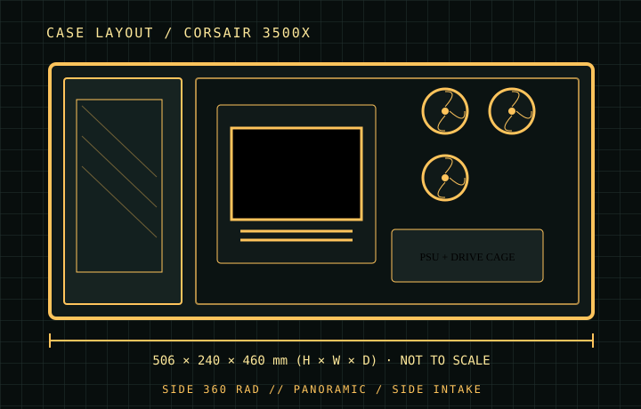

[ CASES // IDENTIFIED CHASSIS ]
Corsair 3500X
The 3500X uses a wraparound glass presentation panel and relocates its main cooling positions to the side, roof, and PSU shroud. The design makes side radiator placement possible, but its side fan/radiator assembly shares the air path beside the graphics card; validate fan and radiator thickness against the build.

MODEL SCOPE: Specifications describe the named enclosure generation, not every visually similar case or retail bundle. Published maximums are component-envelope limits; verify the exact SKU, installed fans/radiators, connectors, and manufacturer manual before purchase or assembly.
Dimensions & compatibility
| Cataloged model | Corsair 3500X |
|---|---|
| Generation / class | 2024 · ATX panoramic mid-tower |
| External dimensions | 506 × 240 × 460 mm (H × W × D) |
| Motherboard fit | Mini-ITX, Micro-ATX, ATX, and E-ATX boards up to 305 × 277 mm; reverse-connector support depends on exact board layout. |
| Drive compatibility | Two dedicated 2.5-inch mounts and two 3.5-inch/2.5-inch combination mounts. |
| Graphics card | Up to 410 mm. |
| CPU air cooler | Up to 170 mm tower height. |
| Power supply | Up to 180 mm. |
| Fans and radiators | Top and side: up to 3×120 mm or 2×140 mm fans per position; up to 360 mm radiators at top/side. Rear: 120 mm. PSU shroud: up to 2×120 mm fans; no conventional front fan/radiator position. |
Fit notes for this layout
This is the 3500X family, not the visually similar 6500X dual-chamber model. Standard, ARGB and iCUE LINK bundles vary in included fans; the enclosure fit envelope is the relevant comparison here.
- A side-mounted 360 mm radiator uses the principal side intake plane; account for its thickness before choosing a thick GPU or side-facing cable plugs.
- E-ATX width support is bounded at 277 mm; wider boards can cover cable passages or conflict with the side mounting area.
- The lack of a front radiator position means a conventional front-to-back cooling layout is not available; plan intake and exhaust around side/top/rear positions.
Source record
- Corsair — 3500X product specificationsManufacturer model, supported board sizes and clearances.
- Corsair — 3500X Series manualInstallation diagrams for the 3500X enclosure family.
- TechPowerUp — Corsair 3500X ARGB reviewIndependent teardown and chassis measurements.
Case specifications are manufacturer-rated maximums unless stated otherwise. Component shape, mounting hardware and assembly order can reduce practical clearance; consult the exact revision manual when dimensions are critical.